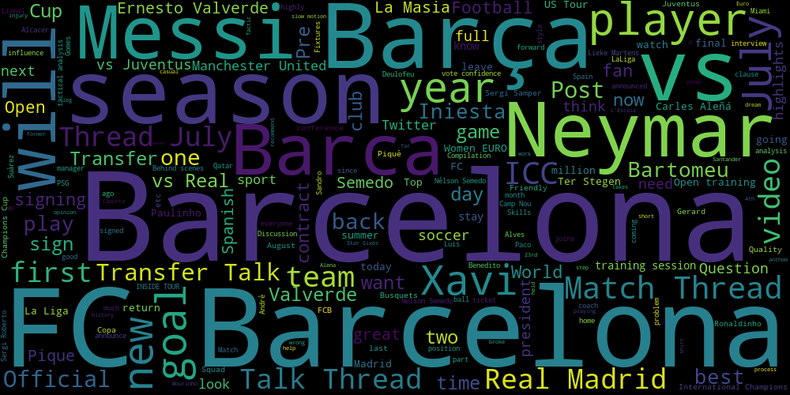
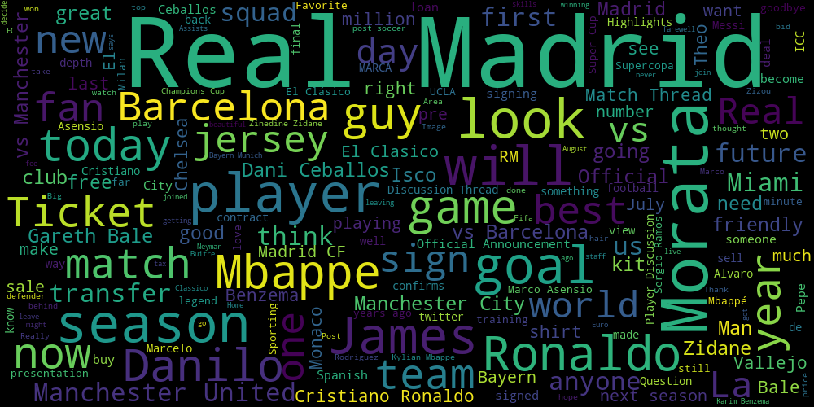
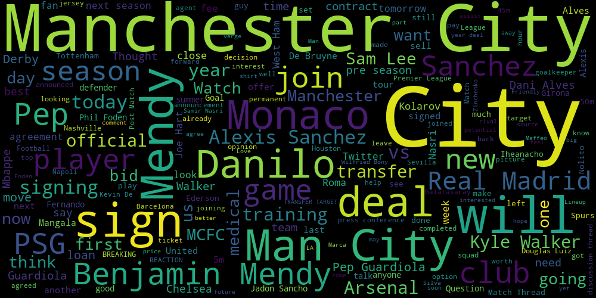
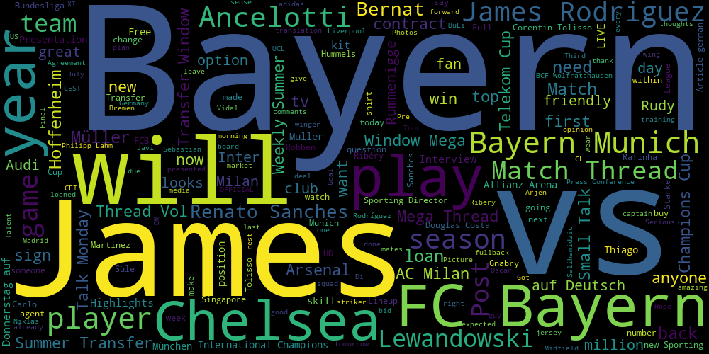
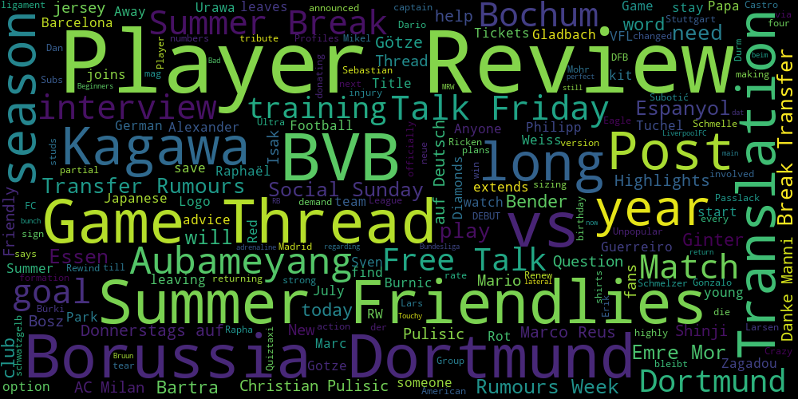

Reddit is one of my favourite discussion websites. It is a forum where people can post links or text posts which are downvoted and upvoted by users. "Subreddits" are communities based on a certain topic - like business, news, sports. Being a big football fan, I frequently visit the football-related subreddits. If you've been following European football at all, you'll know that even though the transfer window is not yet over, the past month or so has been crazy in terms of transfer news.
I have also been getting familiar with data visualization tools, and I thought it would be really cool to draw word clouds of football team's subreddit posts, and try to visualize the obsession of football fans with the transfer window.
I took the titles of 1000 top voted posts of the last month for the 10 most subscribed football subreddits, and /r/soccer - which is the most subscribed neutral football subreddit. The code for generating these word clouds is available on Github

What can we infer from this word cloud?
- Neymar will sign for Chelsea (Thanks to /u/elCheirinho for this very humorous insight)
- On a serious note, Neymar has captured the news a lot with his possible move to PSG, hence its not a surprise that he's here.
- Most major clubs other than Chelsea, like Manchester United, Manchester City, etc have multiple names (United, ManU, City), while Chelsea is probably the only major club with a single name, hence Chelsea is the biggest word in the cloud (in terms of team names). Thanks to /u/here-i-cum for this insight.
Now lets look at the individual teams.
Arsenal (/r/Gunners)¶

- Lacazatte has been the main transfer target for Arsenal this summer.
- Wenger, and whether he stays/leaves is always on people's minds at the start of every season.
Manchester United (/r/reddevils)¶
- This looks like a more balanced word cloud than the other ones. None of the words really stand out (other than United and Manchester United).
- We can hypothesize that the /r/reddevils were least obsessed about a single transfer target. Their titles are divided between Rooney, Everton, Lukaku, Mourinho, Chelsea, etc. This is also due to the fact that their major signing - Lukaku, had a lot of other variables involved with the transfer - Chelsea were looking to sign him as well, while Lukaku made a lot of statements on how he wants to leave Everton, and so on.
Liverpool (/r/liverpoolfc)¶

- Liverpool tapped up Salah early in the window, and their recent obsession has been with the constant on-and-off transfer saga of Naby Keita
- Coutinho has also been in the news, because of Barcelona's interest, and we see him having a decent representation in the word cloud as well.
Following are the word clouds from the other football team subreddits.
Chelsea (/r/chelseafc)
|
Tottenham Hotspurs (/r/coys)
|
Barcelona (/r/Barca) |
Real Madrid (/r/realmadrid) |
Manchester City (/r/MCFC) |
Bayern Munich (/r/fcbayern) |
Borussia Dortmund (/r/borussiadortmund) |
Well, this was a lot of fun. I'm working on some similar ideas - like including the comments data as well, to analyze how optimistic/pessimistic fans of different teams are. Please comment below if you would like to add some more analysis from these word clouds - unfortunately I could only do 3 teams for now.